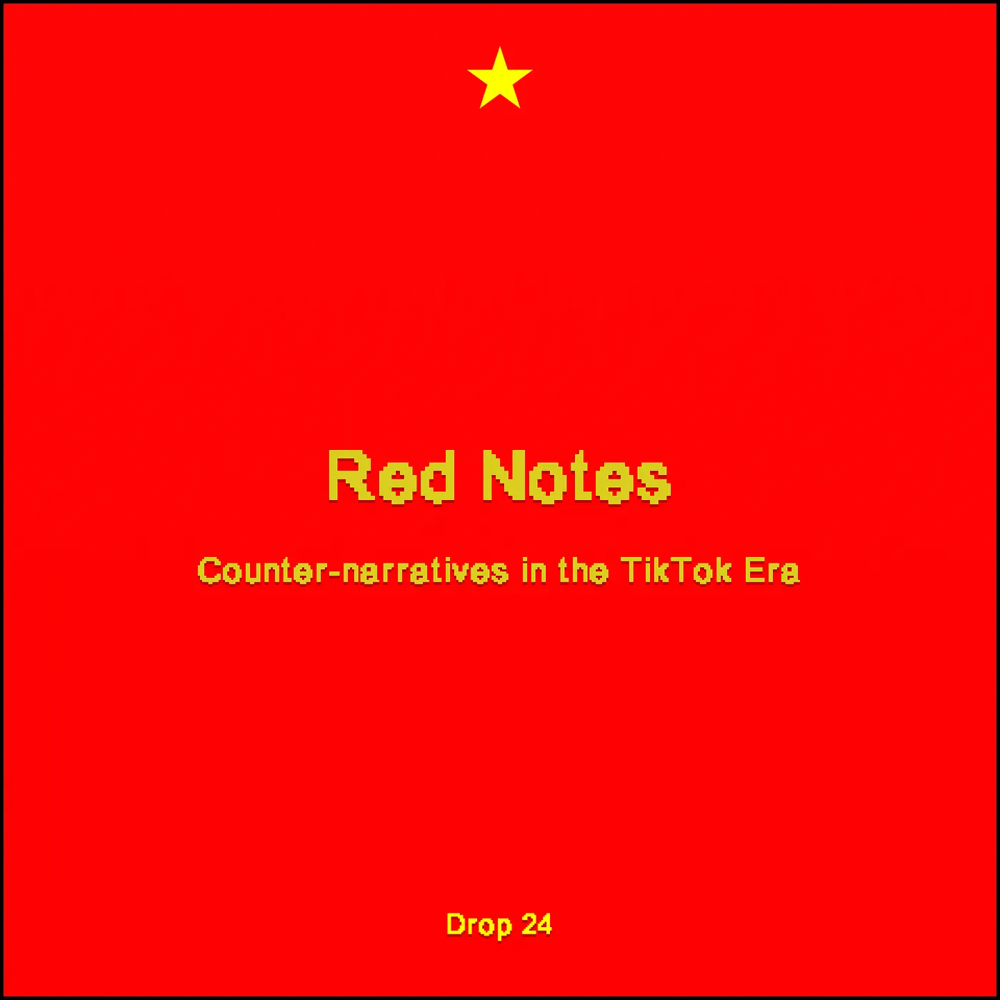
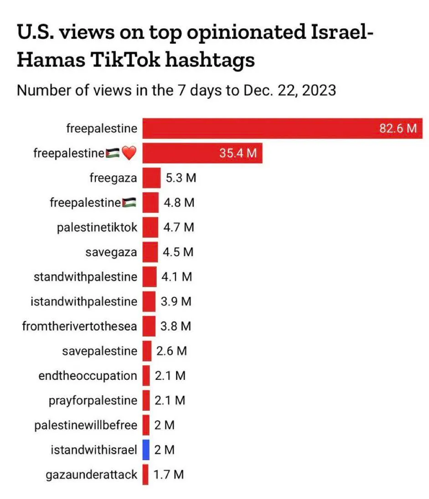

Drop #24 · January 17, 2025 · 8 min read
Hey everyone (▰˘◡˘▰)
Welcome back to Drops, REINCANTAMENTO’s newsletter. First Drop of 2025!
For some time, I have been gathering notes for a reflection on TikTok's role in contemporary public discourse, with particular attention to its manifestations in the United States.
However, in the era of the Great Weirdening, the pace of events grants no much pause for reflection, rapidly rendering analytical premises obsolete. So, we find ourselves potentially days away from a legislative intervention that could determine TikTok's definitive band in the US. In response to this threat, we are witnessing a new moment of digital exodus toward the Chinese ecosystem of RedNote. This text represents my attempt to understand how we arrived here.
A reminder: also in 2025, REINCANTAMENTO is sustained by voluntary work. If you like what we do, consider donating or getting a paid subscription to support what we do!

The Physics of TikTok
It is difficult to underestimate the transformative impact TikTok has exerted on the media landscape over the past five years. Born as a platform dedicated to short musical videos —a sort of evolution of Vine—ByteDance's social network rapidly transcended its original conception. During the suspended, boring days of the 2020 lockdown, the platform was initially adopted en masse by the hyperconnected Generation Z, before expanding transversally across all demographic strata, establishing itself as the most vital digital space in the contemporary panorama.
This evolution transformed it into the nervous center of 2020s Internet: a teeming hive producing memetic trends (demure, Man in Finance, to name but a few) and unexpected emerging celebrities, inevitably becoming the preferred territory for brands' cultural relevance strategies. Moreover, TikTok's impact has been so profound as to transform other social media in its image, where the characteristic For You page of TikTokian origin has become ubiquitous.
Beyond its digital folklore dimension, TikTok has established itself as an informative platform for a broad portion of the global population. By September 2024, 30% of Americans identified it as their "primary source of information." The peculiarity of TikTok's informational discourse lies in its inherently oppositional nature to mainstream media, developing a unique dynamic: the platform's physics—from its algorithm to its user design—has fostered the emergence of a more decentralized and communitarian public discourse, less bound to vertical informational hierarchies and more oriented toward collective decoding of contemporary informational patterns.
The peculiarity of TikTok's algorithmic infrastructure merits deeper analysis. Though formally protected as a commercial secret, it's plausible that the platform's algorithm shares significant affinities with Monolith, a recommendation system described by ByteDance in a seminal paper. Monolith's distinctiveness lies in its use of collision-free "embedding tables": an architecture that preserves the uniqueness of users' and contents' digital identities, avoiding contamination or overlapping. This technical specificity translates into the algorithmic intimacy that characterizes the For You feed experience.
The other decisive element is its real-time learning system. While traditional algorithms update their recommendations at fixed intervals (hours or days), Monolith operates in "online training" mode, where every interaction—whether a prolonged pause on a news video or a quick swipe past a dance—is processed and incorporated into the model almost instantaneously. This explains why TikTok seems to "understand" its users with an almost uncanny precision, and why it manages to surface trends and conversations with unprecedented velocity.
The informational environment generated by Monolith is characterized by a surprising fluidity and dynamicity, especially compared to its rivals on other platforms. As this study demonstrate, the algorithm chisels a granular and plural personality for each user, one that escapes the traditional dynamics of filter bubbles. While thematic clusters do form locally—as in the case of commentary around the Puff Daddy case or a particular football match—these do not crystallize into isolated information bubbles. On the contrary, the global environment maintains a discrete permeability, where information flows according to non-linear patterns.
You might not belong to a specific niche at this moment, but you're always a few likes away from falling into a new highly specialized tunnel, following what can be termed "high-intensity, short-duration engagement patterns." This cognitive mobility favors the rupture of the homophily typical of traditional social media, transforming TikTok into a space of ideative cross-pollination, where virality is distributed to the four corners of the platform and among different user categories.
From Physics to Politics
The platform physics shapes the platform politics. The For You flow, organically familiar yet rhythmically accelerated, tends to activate what cognitive psychologists define as the brain's System 2, privileging immediate emotional reactions over System 1's deliberative processes. This characteristic, combined with the high level of trust users place in the platform's content, has rendered TikTok a particularly fertile environment for the emergence of counter-narratives.
The most resonant example undoubtedly concerns the perception of October 7, 2023, and the subsequent Israeli massacre in Gaza. While mainstream Western media discourse largely aligned with Netanyahu government policies, TikTok emerged as the primary digital agora for the dissemination and consolidation of a "pro-Palestine" narrative. The platform's ability to influence American public opinion, traditionally pro-Israel, by proposing an alternative version from the conflict's earliest phases, represents a significant case of counter-hegemonic potentialities emerging through this socio-algorithmic assemblage.

The singularity of TikTok's discursive ecosystem has not escaped the American political establishment. Republican Representative Mike Gallagher produced a paradigmatic document of this institutional anxiety, defining the platform as "digital fentanyl": a weapon of mass distraction orchestrated by Xi Jinping to divert American youth consciousness, making them believe, for instance, that Hamas might not be the true villain of the story. It is not coincidental that this apocalyptic characterization emerged precisely as Congress was preparing the legislative ground for the ban, creating a discursive apparatus to justify censorial intervention. The rhetoric of "national security" with its formal accusations—from alleged data collection of American users to potential Chinese government interference—masks the establishment's unease at the emergence of a discursive space that escapes traditional mechanisms of consensus management.
A space so fluid that it made viral—let us not forget—Osama bin Laden's Letter to America, penned by who was considered the American state's public enemy #1 just two decades ago.
How to not mention the hyper-memetic personality cult around the figure of the vigilante Luigi Mangione, fueled by tens of thousands of videos and disseminated through TikTok's algorithmic circuits until it became a mass phenomenon with strong anti-capitalist connotations.
We're not speaking solely of manifestly political events: Puff Daddy's sexual and criminal scandal inflamed the punitive spirits of millions of Americans online against Los Angeles's cultural elite, accused of the most nefarious misdeeds. On TikTok specifically, countless documents were dissected, interpreted, and collectively read: a swarm's murmur, a grand collective gossip that overwhelmed the mainstream news's excessively temperate version.
The question of alternative narratives inevitably raises the question into the boundary between collective research and conspiratorial drift. As Italian researcher Alessandro Lolli reminds us in his analysis of contemporary conspiratorial dynamics, the same bottom-up narrative construction mechanisms that can generate conspiracy theories have historically enabled the emergence of truths occluded by institutional power—the paradigmatic case of Italy's strategy of tension in the 1970s and 80s stands as eloquent testimony.
The fundamental discriminant resides in the ecology of actors who insert themselves into this accelerated flow of affects and information, shaping the direction of collective discourse. The ambivalence of these algorithmic spaces emerges with particular evidence in the contrast between the United States, where the platform has catalyzed progressive and anti-systemic instances, and the German context, where we witness a colonization of digital space with radically opposite signs.
As Maxi Wallenhorst documents in an analysis for the Berlin Reviewer, Alternative für Deutschland (AfD) has orchestrated a digital presence that perfectly embodies this ambivalence: comprehending the technopolitical potentialities of the Chinese platform, the party has accumulated nearly 18 million likes by January 2024, dramatically eclipsing the combined reach of the entire governing coalition, which remains at just over two million interactions. This digital asymmetry reveals how algorithmic architectures, far from being neutral, configure themselves as battlefields where progressive and reactionary forces compete for narrative hegemony, each exploiting the medium's affective and technical peculiarities.
Zoom Out: The Story of A Platform in a Crisis of Hegemony
In the hegemonic crisis in which we live, we witness a proliferation of events that escape the epistemic frameworks of Western liberalism. The institutional response, particularly evident since the pandemic period onward, articulates itself through increasingly monolithic narratives that seek to preserve the status quo, labeling as "enemies" of the West—anti-vaxxers, pro-Putin, pro-Hamas, etc.—any voice that evidences its contradictions.
In this context, the latest trend of TikTok's hive mind emerges as a symbolic sw. Faced with TikTok's imminent ban, American users have organized a collective exodus, deciding to move en masse toward RedNote (Xiaohongshu), a platform highly popular in China (albeit among a high-class and highly internationalized demographic). This represents an irreverent gesture directed at American legislators who, let us remember, are banning TikTok precisely because it leads American citizens toward "anti-American positions." Having arrived on the quintessentially Chinese RedNote, American and Chinese users have begun to interact, reciprocally deconstructing the propagandistic myths of opposing empires. The magic of the Internet serendpity further undermines the Western narrative of China as a dystopian Evil Empire 2.0, revealing instead a complex social reality characterized by analogous aspirations and problematics.
If the January 19 ban should effectively mark the end of the TikTok era in the United States, it would represent a most worthy exit. In a perpetual flow of short videos, a bizarre form of poetic justice has materialized: through its folds emerge, in full light, the increasingly acute contradictions of an empire in decline.